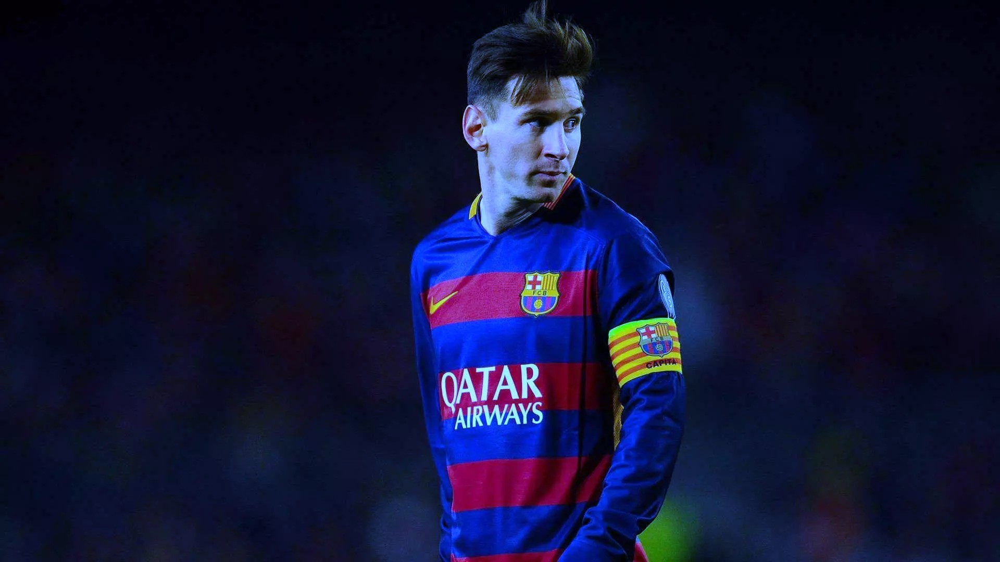

.png)
.png)
.png)

2016–17: Fourth Golden Boot

Messi opened the 2016–17 season by lifting the 2016 Supercopa de España as Barcelona's captain in the absence of the injured Andrés Iniesta;[207] he set-up Munir's goal in a 2–0 away win over Sevilla in the first leg on 14 August,[208] and subsequently scored in a 3–0 win in the return leg on 17 August.[209] Three days later, he scored two goals as Barcelona won 6–2 against Real Betis in the opening game of the 2016–17 La Liga season.[210] On 13 September, Messi scored his first hat-trick of the season in the opening game of the 2016–17 UEFA Champions League campaign against Celtic in a 7–0 victory; this was also Messi's sixth hat-trick in the Champions League, the most by any player. A week later, Messi sustained a groin injury in a 1–1 draw against Atlético Madrid and was ruled out with injury for three weeks.[211] He marked his return with a goal, scoring three minutes after coming off the bench in a 4–0 home win over Deportivo de La Coruña, on 16 October.[212] Three days after this, he netted his thirty-seventh club hat-trick as Barcelona defeated Manchester City 4–0.[213] On 1 November, Messi scored his 54th Champions League group stage goal in Barcelona's 3–1 away loss to Manchester City, surpassing the previous record of 53 goals held by Raúl.[214]
Messi prior to a friendly game with Al Ahli SC in Doha, Qatar in December 2016
Messi finished the year with 51 goals, making him Europe's top scorer, one ahead of Zlatan Ibrahimović.[215] After placing second in the 2016 Ballon d'Or, on 9 January 2017 Messi also finished in second place – behind Cristiano Ronaldo once again – in the 2016 Best FIFA Men's Player Award.[216] On 11 January, Messi scored from a free-kick in Barcelona's 3–1 victory against Athletic Bilbao in the second leg of the round of 16 of the Copa del Rey, which enabled Barcelona to advance to the quarter-finals of the competition; with his 26th goal from a free-kick for Barcelona in all competitions, he equalled the club's all-time record, which had previously been set by Ronald Koeman.[217] In his next league match, on 14 January, Messi scored in a 5–0 win against Las Palmas; with this goal, he equalled Raúl's record for the most teams scored against in La Liga (35).[218]
On 4 February 2017, Messi scored his 27th free-kick for Barcelona in a 3–0 home win over Athletic Bilbao in the league, overtaking Koeman as the club's all-time top-scorer from free-kicks.[219] On 23 April, Messi scored twice in a 3–2 away win over Real Madrid. His game-winning goal in stoppage time was his 500th for Barcelona.[220] His memorable celebration saw him taking off his Barcelona shirt and holding it up to incensed Real Madrid fans – with his name and number facing the crowd.[221] On 27 May, Messi scored a goal and set up another for Paco Alcácer in the 2017 Copa del Rey final, helping Barcelona to a 3–1 victory over Alavés, and was named Man of the Match.[222] In total, Messi finished the 2016–17 season with 54 goals, while his 37 goals in La Liga saw him claim both the Pichichi and European Golden Boot Awards for the fourth time in his career.[223]